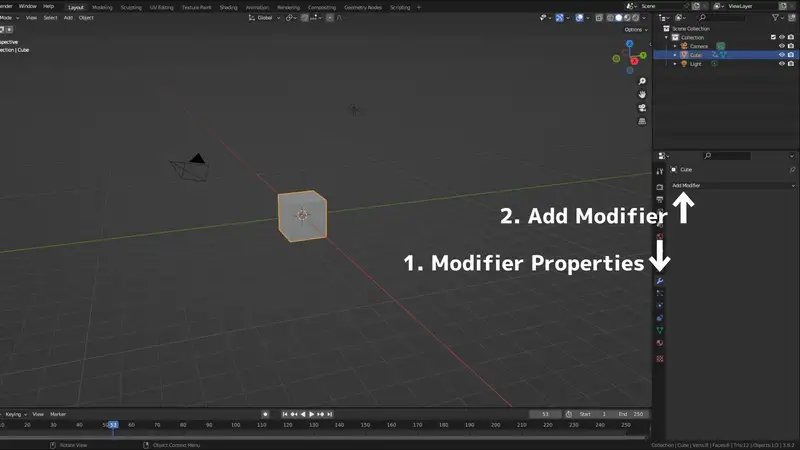
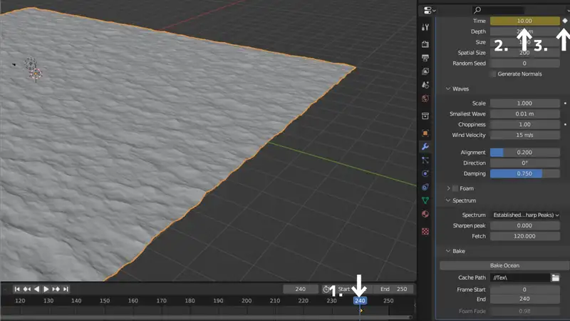
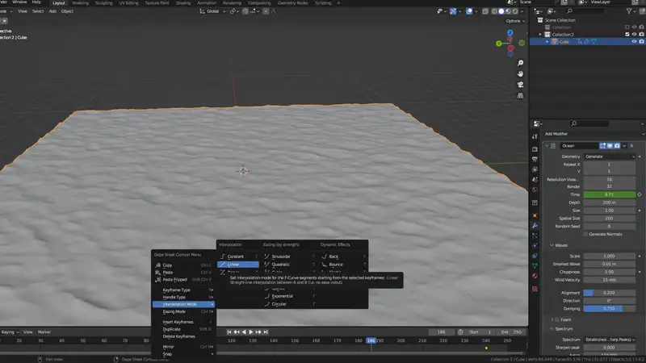
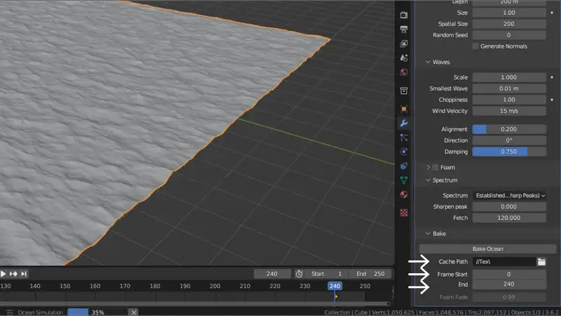
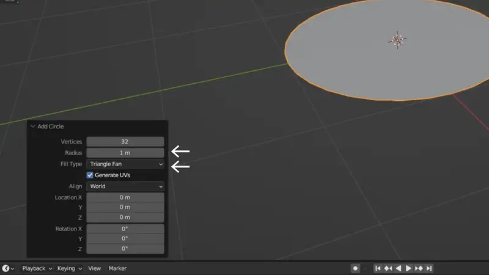
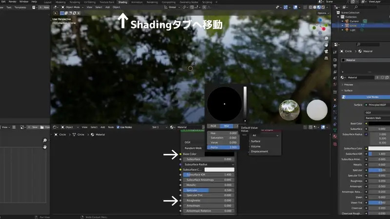
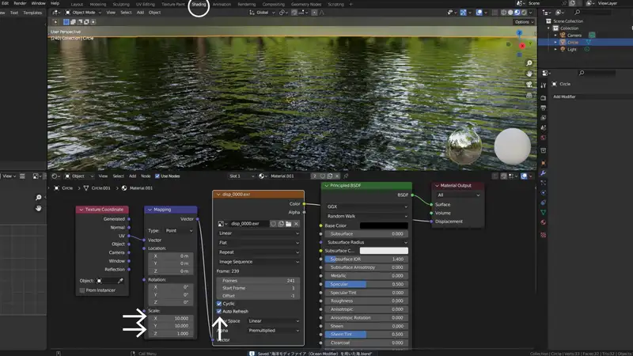
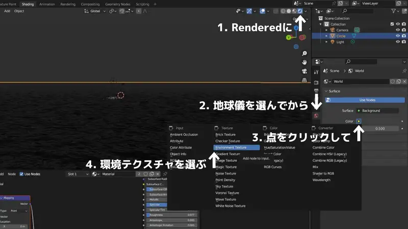
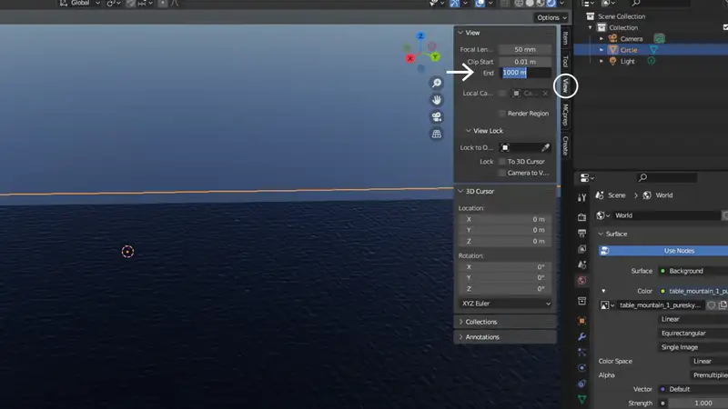

blenderで海を作るなら海洋モディファイア（Ocean Modifier）を使うのが一般的ですが、ベイク前提の機能ということもありとっつきにくい感があります。 そこで私は、以前の記事でノイズテクスチャを用いた静止画向けの海の作り方を紹介しました。
しかし、この作り方では波を動かせませんので動画の出力には向きません。波を動かすにはオーシャンモディファイアを使いこなすしかないのではないでしょうか。
したがって今回、なるべくシンプルで最小限の手順でオーシャンモディファイアの使い方を記録しておきます。
概念の説明
まず、海洋モディファイアという機能を利用して、波の様子を画像データとしてBake（書き出し）します。
続いて円盤を作成し、そこにベイクした波の様子をBake（焼きこみ）します。
見ての通り、書き出しも読み込みも「ベイク」という単語を使用しますが、わかりにくいのでこの記事では（）内の単語で統一することにします。
本題
Bake（書き出し）
最初に、プロジェクトを保存しておきます。今回は連番画像を出力しますので、何かフォルダを作ってからそこにプロジェクトを保存するのが良いと思います。
まずblenderを起動すると、いつもの立方体があります。今回はこれを消さず、左クリックで選択します。
画面右下、プロパティの中にスパナのマークのタブがあります。これがモディファイアプロパティです。続いて、 Add Modifiers > Ocean の順にクリックします。
{kind=link}
すると、立方体が海の形になったかと思います。続いて、つるつるとした波の少ない海を念頭にモディファイアのパラメーターを一気に設定していきます。 波を書き出したときの解像度は、ResolutionとSpatial Sizeできまりますので特に重要となります。また、Resolutionの数値によって波の見た目も大きく変わることに注意してください。
- Resolution Viewport: 32 (or 16) / Render: 32
- Spatial Size（空間サイズ）: 200 m
- Waves > Wind Velocity: 15 m/s
- Waves > Alignment（配置）: 0.2
- Waves > Damping: 0.75
- Spectrum > Spectrum: Established Ocean (Sharp Peaks)（従来の海洋）
{kind=link}
続いて、波がアニメーションするように設定していきます。タイムライン上の再生ボタンを押しても、波は動かないはずです。ここで、画面下のタイムラインにキーフレームを挿入します。 まず現在位置を0のところへドラッグし、先ほどまで調節していたモディファイアプロパティの中の Time の欄の横の点をクリックします。（数字の欄が黄色に変化します。）
続けてタイムラインの現在位置を240のところへドラッグし、 Time の欄に10と入力した上での横の点をクリックします。するとタイムライン上の0と240に黄色のひし形が現れます。
{kind=link}
このままですと、波がなだらかに動き始めてなだらかに停止してしまうので、動きを変更します。 キーフレームが白くなってしまった場合、Shift+クリックで選択してください。続いてタイムライン上で右クリックし、Interpolation Mode > Linear（左端の列）をクリックしてください。 連続的に動いていたら正解です。動作が重たい場合はResolution Viewportを下げてください。
{kind=link}
最後に、 Bake > Cash Pathに連番画像を出力したいフォルダを作り、指定しておきます。 Frame start: 0 / End: 240として、ひとまず10秒分ベイクしてみます。Bake Oceanをクリックしてください。
{kind=link}
するとdisp_0000.exr等という名前の4 MB程度のファイルが240個生成されます。
海の円盤を作成
上で使ったモディファイアの海面はもう不要ですので、アウトライナーで目とカメラのアイコンをクリックして非表示にしておいてください。（消してしまっても構いません。）消してください。 消さないと裏で処理が走りますのでBlenderが異常に重くなります。
shift+aでMesh > Circleを選びます。すると、輪っかが出現すると同時に画面左下にメニューが出てくるので、これをクリックします。Fill Type: Triangle Fan、Radius: 1000 mに変更しておきます。
{kind=link}
ウィンドウの一番上を見ると、現在は"Layout"タブに居るのがわかるでしょうか。これを"Shading"タブに切り替えます。すると画面下にノードエディターが現れるので、ここでノードを組んでいきます。
改めて、円盤が選択されていることを確認してください。次に、Shader Editor 上の+Newというボタンを押すと、Material.001というマテリアルが生成されると同時にPrincipled BSDF ノードが生成されます。
Principled BSDF のBase Colorを黒に、Roughness（粗さ）を0にします。すると鏡のように景色が反射します。
{kind=link}
Bake（焼きこみ）
書き出した画像を、この円盤に焼きこみます。
Shader Editor上で、Image Texture ノード、Mappingノード、Texture Coordinate（テクスチャ座標）ノードを追加し、以下のように繋ぎます。
- Texture Coordinate のUV からMapping のVectorへ
- Mapping のVectorからImage TextureのVectorへ
- Image TextureのColorからMaterial Output のDisplacementへ
Image Textureノードに画像を読み込みます。Open > 書き出した連番画像のフォルダを開き、aを押して全選択してOpen Imageをクリック。更にAuto Refreshにチェックを入れて置きます。
最後に、テクスチャのスケールを合わせるため、Mappingノードの SaleをX=10, Y=10とします。これでシェーダーは完成です。下の画像のようになっていなければやり直してください。
{kind=link}
カメラの設定とレンダリング
背景の設定
まず、背景の設定です。Layout タブに戻ります。
画面右上の球体が四つ並んでいる中の一番右を選択してレンダーモードにしておきます。これがレンダリング結果になるのですが、背景が無くなり真っ暗になったのではないでしょうか。 今回は背景を作るために環境テクスチャを利用しますので、まずは背景となる画像を用意しなければなりません。 画像は下記のWebサイトから入手しました。画面右下（Properties）の地球儀のタブ（World）を開いて、Colorの横の点をクリックし、Environmental Texture（環境テクスチャ）を選択します。 すると、その下にOpen（フォルダを開く）が出現するので、先ほどダウンロードした画像を選択します。すると、空が現れます。
環境テクスチャ入手先です。今回は4k, HDRを使用しました。 https://polyhaven.com/a/table_mountain_1_puresky
{kind=link}
撮影の前の確認
カメラの設定に進む前に、諸設定を済ませておきます。被写体を置きたい場合は置いておいてください。
まず3Dビューポート上の視界を広くします。3Dビューポート上でNキーを押してサイドバーを出し、ViewタブのClip Start / End のEndの方に0をひとつ足します。
また、再生ボタンを押して波がちゃんと動くことを確認しておきます。
カメラの設定
次にカメラの設定です。画面右上のアウトライナーからカメラを選びます。すると、プロパティにカメラアイコンのタブが出現しますのでクリックします。Lensの中のClip Start / EndのEndに0を一つ追加します。
{kind=link}
影と雰囲気の設定（eevee 向け）
eevee を使うなら光源が無いと影が出ません。ですので、環境テクスチャの明るさを下げ、光源としてSunを使用します。Light（ライト）を選択してから、以下のように設定します。 Cyclesを使うなら特に設定の必要はありません。
- World（地球儀） > Surface > Strength: 0.5
- Object Data Properties（電球）> Light > Type: Sun
- Object Data Properties（電球）> Light > Strength: 10
- Object Data Properties（電球）> Shadow: チェック
- Object Data Properties（電球）> Shadow > Cascaded Shadow Map > Max distance: 2000 m
- Render（上から二番目） > Shadows > Soft Shadows: チェックを外す
他にもレンダープロパティを設定しておきます。AOは隙間影、Bloomは光のにじみを表します。
- Render（上から二番目） > Ambient Occlusion: チェック
- Render > Ambient Occlusion > Distance: 10 m
- Render > Ambient Occlusion > Factor: 4 m（直接入力します）
- Render > Ambient Occlusion > Bounces Approximation: チェックを外す
- Render > Bloom: チェック
- Render > Screen Space Reflections: チェック
霧の設定
更に雰囲気を出したいなら、霧の設定が有効です。設定中、一時的に真っ暗になったり真っ白になったりします。
- World（地球儀） > Volume > Volume: Volume Scatter
- Render（上から二番目） > Volumetrics > Start: 100 m / End: 1500 m
- World（地球儀） > Volume > Density: 0.001
- World（地球儀） > Volume > Color: 明度を半分程度にし、少し青に寄せる。
{kind=link}
レンダリング
カメラの位置と向きを調節してレンダリングしてみましょう。画面一番上の左端、Render > Render Imageをクリックすると現在のフレームの静止画が別窓に出力されます。 これで問題が無ければ動画の出力を行いましょう。また右下のPropertiesで設定を行います。
- Output（上から3番目）> 出力したいフォルダを選ぶ
- Output > File Format: FFmpeg Video
- Output >Encoding > Container: MPEG-4（.mkvでもAviUtlで読み込めますよ）
{kind=link}
動画を書き出すには、画面一番上の左端、Render > Render Animationをクリックします。
書き出された動画のファイル名はすぐに変更しましょう。同じ名前で書きだそうとすると、問答無用で上書きされます。（覚えてろよ…）
そのあと
今回作った海の映像を載せておきます。
もっと長い映像が良ければ、モディファイアをベイクするときに必要な分だけ書き出してください。書き出した後は焼きこみのシェーダーで画像を選択しなおすのを忘れずに。